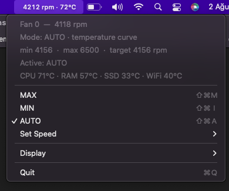

Fan Control Menu — take your Mac's fan back.
MAX, MIN, a fixed speed, or system AUTO — from the menu bar, whenever you want.
AUTO uses its own 50–88°C curve because some Macs never spin the fan up on their own.
The target speed is re-asserted every 1.5s, so the system can't silently override you.
Live rpm + temperature. Pick rpm only, temperature only, or hide the icon entirely.
Every temperature sensor your Mac exposes is discovered and listed — choose what you watch in the menu and in the menu bar.
Show °C, °F or K, and pick which sensor drives the AUTO fan curve.
